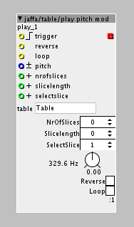

New additions - sample slicer based on play pitch
Search: jaffa/table/play pitch mod
This is a modded version of the play pitch object, that offers slicing, looping for slices and reverse playback of a slice. It took a few tries to get it working but I think it's stable now.
CPU usage is pretty low, close to the original one, so you can load many of them in a patch.
Parameters:
NrOfSlices:
Sets how many slices you want to slice the FULL table into. The file that you want to slice MUST fit perfectly in the table or else it won't slice the sample correctly. So you would probably have to edit the sample before loading it into a table. I might try to make it work for any sample size later. First try did not work, but maybe I will get around to second try at some point 
When setting NrOfSlices you have to look at the display at the bottom of the object, NOT the actual value that you set with the parameter, to get the actual number of slices.
If you set the NrOfSlices parameter to, you get:
0 slices = 1 slice
1 slices = 2 slices
2 slices = 4 slices
3 slices = 8 slices
4 slices = 16 slices
5 slices = 32 slices
6 slices = 64 slices
Etc.......
Slicelength:
Sets the length of a slice. If you set it to 0 it will play the full slice, if you set it to 1 it will play half the slice and so forth.
SelectSlice:
Selects which slice to play back.
Pitch:
Set the pitch of the wavefile, like the original version of play pitch.
Reverse:
If reverse is on, the selected slice with be played back in reverse.
Loop:
If you turn on Loop, the selected slice will be looped until you turn loop of again.



{kind=link}